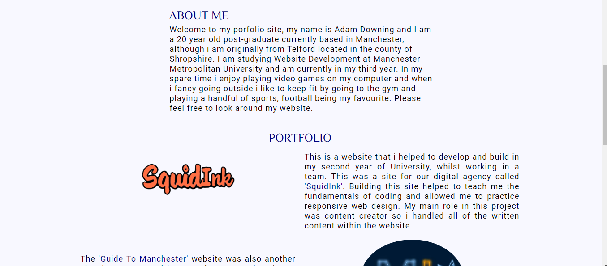
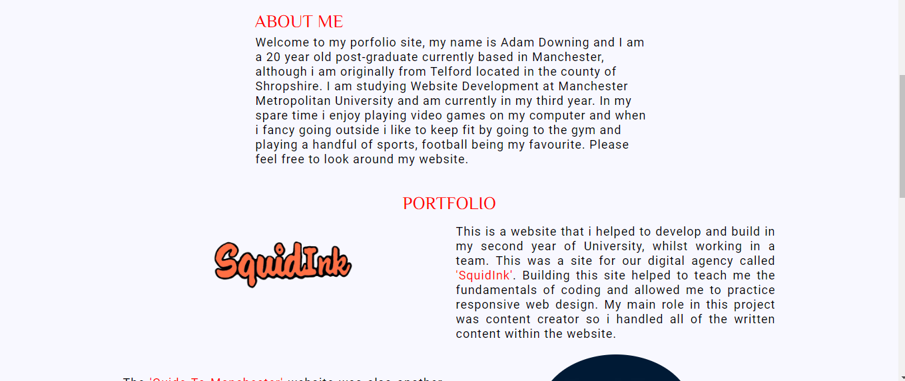

Defintion
CSS is pretty fun within itself but stylesheets in the modern day are getting larger, harder to maintain and incredibly complex (SASS, 2020). This is where Syntactically Awesome Style Sheets also known as SASS becomes extremely useful. It uses your pre-processed SASS file and automatically converts it into a normal CSS file which can be used within your website. The main question that needs to be answered is why you should choose SASS over regular CSS? This is down to the numerous features that is possesses, although for this project I am going to drawing my attention to nesting, imports and variables. I have chosen to only focus on these features as I felt these would benefit my site greatly.
Before carrying out this self-initiated project I have had no previous experience with SASS, or pre-processors in general. After carrying out some research it came to my attention that SASS was arguably the most well-known pre-processor (Uzayr, 2015). With this newly acquired knowledge I had no doubt that I wanted to gain a greater understanding of SASS.
Background Information
Before I jump into the setup it is probably best to explain what each of these features contribute to my site. The first feature is nesting, extremely similar to what is found in HTML which will greatly improve the readability of my file. Furthermore, if I wished to return to the file to edit something it would be much easier to pinpoint the exact piece of code I was looking for.
Next up are variables, similar to variables in JavaScript they also store information that you can then re-use. In this project I will be using it for elements such as colours, padding and generally any value within CSS that I will reference within my SASS file.
The final feature I will be exploring within this project are imports, fundamentally it allows you to dissect your SASS code into much smaller sections which will further contribute towards being able to upkeep my website with ease.
Setup
To be able to use SASS it is essential that you compile it into a CSS file through the use of the SASS command. In simpler terms this means telling the software which file you desire to build from and the output location of the CSS. Although in my case, I installed a SASS compiler plug that was developed for Visual Studio Code, which was ideal as this is the editor, I am most familiar with. By using this it automatically assigned an output location for me. Visual Studio Code also had a live server extension which was extremely useful and allowed me to see real time changes in my coding. My site did not need drastic changes, so I decided to do edit my current code rather than beginning from scratch.
Process
I began by creating a new folder so that I could duplicate my previous web pages, images and other vital files. By creating a duplicate folder, I did not have to worry about losing any original pieces of code and could revert back to these if anything went wrong. I began by copy and pasting all of my HTML files and then creating a SASS file named ‘styles.scss’ within a folder named ‘styles’. I then entered into the ‘styles.scss’ file all of the CSS from my previous site and once saved a CSS file is automatically created. Another useful aspect of SASS is that it adds vendor prefixes for different browsers that don’t necessarily support CSS Flexbox and Grid.
I then created a separate SASS file named ‘variables.scss’ to withhold the variables I wanted to use, these are created through using the ‘$’ symbol followed by what you wish to name the variable and similar to CSS you it is pursued by a colon. Then a desired value was assigned, and the line of code is closed with a semi-colon.
The next step was to edit the second-hand CSS code from my previous site, I changed the code within my CSS that could be replaced with the variables I had created. Whilst doing this I thought it would be a good idea to nest the code within the CSS where necessary, to improve readability.
Progressing from this I also decided it would be beneficial to create two further SASS files for the footer and navigation of my site. The reasoning for this, was that these two elements are used throughout every page on my website. For the secondary files I used an underscore whilst naming them to reduce confusion for myself within the editor.
To incorporate these into the original ‘styles.scss’ file I needed to use another feature that SASS offers, importation. To do this the ‘@’ symbol is used followed by the word ‘import’ and the file location within quotation marks, then closed with a semi-colon.
Now that I had setup SASS it was time to ensure I had done it successfully; I already knew that I had setup the navigation and footer correctly as they wouldn’t appear if I had made an error. I decided that I was going to change the ‘$secondary-color’ from navy to red, once saved this should apply the changes to my website.
Website before:
Website after:
As you can see from the images this worked correctly, with the introduction of SASS I will now be able to apply any changes to my website with ease.
Location
To view the full code either look at the source by pressing the Control key + U or feel free to head over to my GitHub.
Evaluation
Overall, I found that SASS had a small learning curve and was easy to come to terms with. I feel that this is due to my knowledge of CSS that I have gained throughout the course of University. The similarity it also shares with JavaScript also accelerated how quickly I was able to grasp this language. If I was to tackle this project again, I think I would re-design my website from scratch instead of using second-hand code from my previous site, due to the speed in which SASS allows you to work. With the introduction of SASS into my portfolio site I feel relief that I will now be able to edit my site much easier and now I have a general understanding of a much useful language.